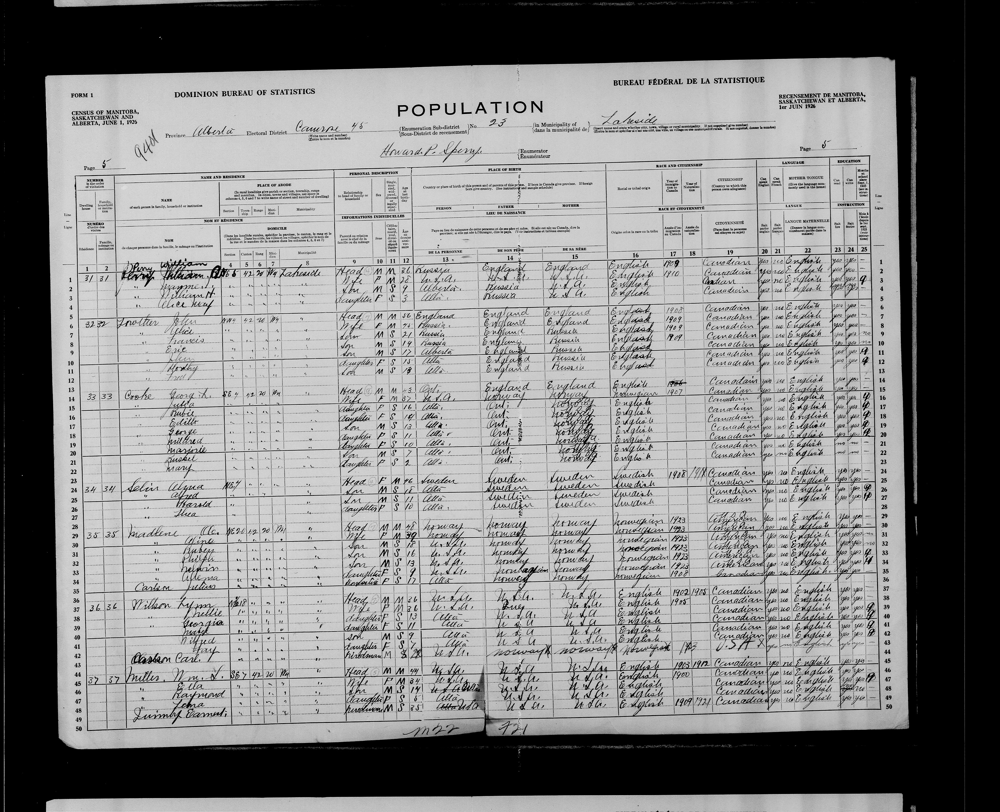
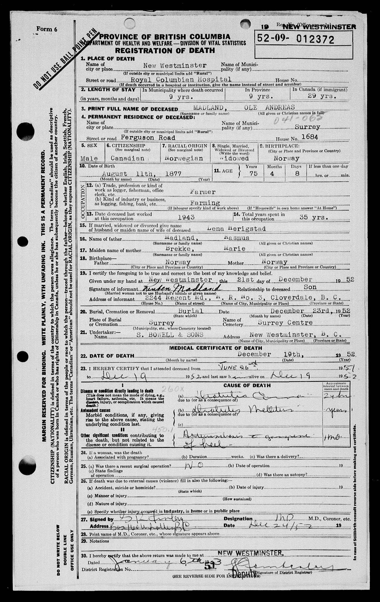

Critical Family History
Critical Family History of Colin M. Madland, uninvited settler.
Settler Research in Indigenous Contexts
Contemporary ‘Western’ research paradigms are grounded in the assumptions of white colonialists and settlers and are fundamentally at odds with the First Peoples Principles of Learning (“First Peoples Principles of Learning” 2008; Held 2019; Reason and Bradbury 2001). Smith (2000) discusses some of the events that have led to the current reality that Indigenous Peoples are the most researched people on earth, yet much of the research has been done on or about Indigenous Peoples and communities, with researchers figuratively parachuting into communities, administering surveys without consulting Elders, then taking the data back to their offices and weaponizing it against Indigenous communities in the form of oppressive governmental policies or releasing xenophobic publications that perpetuate myths about Indigenous Peoples. Lambert (2018) argues that research in Indigenous contexts must be conducted “by and with and for” Indigenous communities if it is going to be socially and ethically just for Indigenous Peoples.
In doing the work of responding to the Truth and Reconciliation Commission of Canada (“Truth and Reconciliation Commission of Canada: Calls to Action” 2015) and improving educational attainment outcomes for Indigenous communities and people, researchers have an obligation to approach Indigenous communities as sovereign nations and as equals in the process. This presentation will offer and model one of several key characteristics of Indigenous/Indigenist research involving both Indigenous and non-Indigenous partners (Smith 2000). In engaging in Indigenist research, it is imperative that the non-Indigenous researcher acknowledge their role in the ongoing colonization of Indigenous Peoples and how that fact influences the research relationship and express a commitment to reconciliation and Indigenous self-determination.
Acknowledging My Role: Critical Family History
It is easy for contemporary Canadians to think that the days of settler colonialism are long over and we bear no responsibility in the ongoing oppression of Indigenous nations in Canada, but this view ignores the fact that the public and private infrastructure that Canadians have built was built on stolen Indigenous land and that those of us whose ancestors settled or homesteaded in Canada were gifted land that was stolen by the Crown from Indigenous Peoples.
Sleeter (2016) engaged in a critical family history project and provided a template that others may use. They found that, along with the rise of web applications and software designed for amateur genealogists to trace their family histories, there has been a trend for ‘white’ (I use this term acknowledging that ‘whiteness’ extends beyond phenotype) or dominant social groups to focus solely on exploring their own family history, while ignoring the greater social context in which their ancestors lived. Conversely, members of minority groups were more likely to connect their family histories to the history of systemic oppression their ancestors experienced.
This tendency can lead to a kind of erasure, where the family histories of the dominant group ignore or minimize the role that oppressive government policies have played in their ongoing success and material wealth. It is precisely this erasure of oppression that makes it difficult for many settlers to acknowledge their privilege and their ongoing role in the oppression of minority groups. Engaging in the process of a critical family history is an important first step for settler researchers to acknowledge their role in the research and to more fully understand the implications of a commitment to reconciliation and Indigenous self-determination.
Using online genealogy software to trace ancestral lineage is an accessible, though time-consuming, approach for amateur genealogists to learn about when and where their ancestors originated, and when and where they settled in what is now known as North America. Using this information, it is possible to use census data, land titles, and published wills to trace the transfer of land stolen from Indigenous nations and given to colonial settlers, often for a fraction of its monetary value, and always with no regard for its spiritual value or its role in the lives and identities of Indigenous Peoples. This data may also be aligned with known dates of the initiation of governmental policies that encouraged and enabled the seizure of land from Indigenous Nations. Further, by tracing land titles and archived wills, Sleeter was able to trace the transfer of wealth from specific Indigenous nations to her ancestors and ultimately to her personally.
Purpose and Participation
In the fall of 2019, I engaged in a Sleeter-inspired critical family history focusing on the emigration of my father’s grandfather who left Norway as a young man and eventually homesteaded in central Alberta. This paper and timeline will detail what I learned about my family history, and how I have connected my history with the social and political events of the times when Ole Madland emigrated from Norway and ended up in New Westminster, BC.
As this is a self-study with my ancestors as (unwitting) participants, my position in it is central. I was both the participant and the audience for the project. Sources of information (data) were various government archival websites, my father, and the collective work of other family members contributing to an online genealogical tool called geni.com. As Sleeter (2016) observes, most members of dominant social groups tend to focus only on their own families in tracing lineage. I found that this was difficult to avoid because there is simply no mention of Indigenous Peoples in any of the documents that I discovered and examined related to my family’s history. It took a purposeful decision on my part to try to align my family history with events in the politics of Indigenous-Canadian relations. In the end, though, it is clear that my great grandfather left Norway, likely encouraged by emigration recruiters, at a time when many of his fellow Norwegians were doing the same. They all left Norway because of the difficulty of farming in a land that grows mostly rocks, lured by the promise of free and bountiful land in North America. Their way was both literally and metaphorically cleared by the enactment of laws and the deployment of the military in North America which erased Indigenous Peoples from the land, sometimes through deadly force, but regularly, and still today, through callous indifference and neglect.
This being a critical family history, I engaged in an exploration of what actually happened and I uncovered actual historical documents which attest to the sequence of events that led to my own personal privilege and comfort today. All of this with the goal of moving towards what Kemmis, McTaggart, and Nixon (2014) call a more rational, sustainable, and just perspective as I move into my PhD dissertation project. By understanding clearly the reason that I am here, I am more able to approach research with Indigenous partners from a place of humility and reconciliation.
As I was working through my project, I came to understand Tuck (2009)‘s concept of “mutual understanding” and its importance in participatory action research, and also the unique way that this self-study has led to greater mutual understanding. It may seem curious that a self-study can lead to mutual understanding, but one of the themes I noticed in my project was the presence of silent voices. I had a conversation with a Stó:lô elder about my plan to engage in a critical family history project, and she asked what that meant. When I explained the process of aligning one’s own ancestral history with the social and political happenings of the time, she exclaimed “Oh, we do that all the time!” By engaging in this self-study, I have been catching up. Indigenous people already know all of this. They are reminded of it every day that they see an uninvited settler in their territory. Prior to this project, I could give lip service to ’my ancestors’ in the abstract, but now, I know, with concrete documentation, that a very specific person in history followed the spirit of his day and set out to find a better life and was only able to do that because of the dispossession of the Dakota in 1862, the Cree and Métis in Treaty 6 in 1876, and the Coast Salish, who are still without a treaty. Working towards mutual understanding requires a large amount of work for settlers to catch up to Indigenous people. It requires listening to the silent roar of Indigenous voices desperate for justice.
This timeline is far from complete or comprehensive, and some dates are approximations. It does, however, tell the beginnings of a story; a story that I hope will one day lead to greater understanding, more people making commitments to reconciliation, and to Indigenous self-determination.
1763 - 1900
The period between 1763 and 1900 contains many significant events that continue to affect relationships between settler society and Indigenous Peoples in North America. While there were certainly more acts passed by the Canadian and US governments and more armed conflicts that ended with the expulsion of Indigenous Peoples from their lands, the events identified below represent some of the major acts as well as localized conflicts that led eventually to the settlement of Ole Madland in the United States and then Canada.
July 1763 - The Royal Proclamation

The Royal Proclamation of 1763 is a foundational document in the ongoing relationship between the Indigenous Peoples of North America, the colonial powers (primarily Britain, France, and Spain), and the resultant colonial governments (Canada and the United States).
In short, the Proclamation by King George III divided up the Atlantic coast of North America into four new colonies (Quebec, East Florida, West Florida, and Grenada). It specifies the boundaries of these colonies and specifically sets aside the land west of the “Proclamation Line” to be for Indigenous Peoples. White settlers were not permitted to settle west of the line. It also specifies that land could only be purchased from the British Crown after it had been ceded by Indigenous nations. Indigenous people consider the Proclamation to be the first Aboriginal Charter of Rights because it so clearly specifies the same (Fenge and Aldridge 2015) .

1825 - The Sloopers
Some of the first Norwegian immigrants (aside from the Vikings) travelled to North America in 1825 on a ‘Sloop’ called ‘Restoration’ to escape poverty and religious persecution in Norway (Rosdail 1961).
1830 - The Indian Removal Act
“An act to provide for an exchange of lands with the Indians residing in any of the states or territories, and for their removal west of the river Mississippi” (Jackson 1830) .
The Indian Removal Act in the United States was voted into law during the tenure of President Andrew Jackson. It provided the legal backing for the forced removal of Indigenous Peoples from the land and their relocation. While some nations resisted, they were eventually forced out by the military. Their relocation has become known as the Trail of Tears during which an estimated 4000 Cherokee died (“Introduction—Indian Removal Act: Primary Documents in American History—Research Guides at Library of Congress,” n.d.).
1862 - The Homestead Act
The Homestead Act of 1862, the first of several of its kind, was passed in order to encourage the settlement of the west. Settlers were given 160 acres of stolen Indigenous land in exchange for a small fee and a promise to live on and improve the land by farming.

A photographer took this picture of John and Marget Bakken and their two children, Tilda and Eddie, in front of their sod house in Milton in 1898. John Bakken was the son of Norwegian immigrants, who homesteaded and built a sod house in Milton in 1896. Description from uncopyrighted webpage.
1862 - Dakota War
While the Indian Removal Act of 1830 laid the foundation for Indigenous genocide, there were many subsequent conflicts between Indigenous Peoples trying to defend themselves and the US Military. The Dakota War of 1862 is an example where the Dakota nation (also known as Sioux) were forced into desperation by the unjust treaty violations by the US government leading to the Dakota not having enough food and going hungry. They responded by attacking settlers in the area, killing some and driving many away. This ultimately led to the largest mass execution in US history where 38 Dakota men were publicly hanged in Mankato, Minnesota.
I include this event because it was only about 30 years prior to the arrival of Ole Madland to the exact same land that was stolen from the Dakota. As far as I can tell, Ole did not stay in this area for long and did not own any land.
1863 - Battle of Big Mound
1867 - Canadian Confederation
The creation of the Dominion of Canada was, obviously, an important event in the history of relations between Indigenous Peoples in North America and the new government of Canada. Confederation meant that Canada was now responsible for negotiating treaties with Indigenous Peoples. However, as is common in Canadian history, the role of Indigenous people and the impacts upon them in confederation is often erased. This can be seen clearly in the Wikipedia article on Canadian Confederation, linked below.
The article is thoroughly sourced and cites almost 100 sources, but there is only a very short paragraph at the very end of the article that mentions anything about Indigenous Peoples. That paragraph begins with the sentence “Indigenous communities were absent or ignored in the process of Canadian confederation” (“Canadian Confederation—Wikipedia,” n.d.).
1871 - Dominion Land Survey
1871-1921 - Numbered Treaties
Between 1871 and 1921, the fledgling government of Canada negotiated a series of treaties with Indigenous Peoples in order to secure land for settlement and resource extraction. In all, eleven treaties were signed covering land in Alberta, Saskatchewan, Manitoba, northern Ontario, parts of Yukon, and the Northwest Territory. The goal of the Government was to enable the assimilation of Indigenous Peoples into white Canadian society by ‘encouraging’ them to take up sedentary, agrarian lifestyles (Whitehouse, 2008).
These treaties were signed while the Indigenous People were experiencing significant hardship from smallpox, tuberculosis, and hunger due to bison being over-hunted. Indigenous people were desperate for assistance and thought that signing the treaties would be the best way to secure a future for their children and grand children.

1872 - Dominion Lands Act
The Dominion Lands Act in Canada was designed based on the Homestead Act in the United States and was passed to encourage the settlement of the west. Similar to the US law, the Dominion Lands Act provided 160 acres of stolen Indigenous land for a small registration fee and a promise to live on and improve the land. The Act encouraged any head of household or person over 21 years of age to apply for a homestead. Successful applicants had 3 years to prove that they had improved the land.
Richtik (1975) argues that the Dominion Lands Acts was designed specifically to encourage settlers to choose Canada over the United States.
1876 - Treaty 6
Treaty 6, one of the Numbered Treaties, was negotiated in 1876 and took several years to be fully ratified. I include mention here because Treaty 6 was negotiated only 20 years before Ole Madland emigrated from Norway, and it covers the land where he settled once he arrived in Canada in 1923.
1876 - Indian Act
“The great aim of our legislation has been to do away with the tribal system and assimilate the Indian people in all respects with the other inhabitants of the Dominion as speedily as they are fit to change.”
John A Macdonald, 1887
The Indian Act was intended to be a temporary measure when it was enacted in 1876 because it was thought that it would lead to the assimilation of Indigenous Peoples into white Canadian society. Essentially, it would completely eliminate Indigenous Peoples from Canada. The Act, which is still in effect today, dictates in minute detail who is and is not a ‘Status Indian’, how a person can ‘lose’ their status (a process called ‘enfranchisement’), and how Indigenous people were to be educated (Leslie 2002).
The Indian Act and its many revisions led to the establishment of Indian Residential Schools and their devastating legacy.
1877 - Ole Andreas Rasmussen Madland
My great grandfather, Ole Andreas Rasmussen Madland was born in Madland, Gjesdal, Norway.
1887 - The Dawes Act
1896 - Ole Emigrates to North Dakota
My great grandfather, Ole emigrates from Norway to North Dakota, USA.
My father recalls that Ole arrived in New York and made his way to North Dakota. It seems he spent some time as a boarder on a farm in Minnesota until at least 1900.

1901 - 2016
By the time my great grandfather, Ole Andreas Rasmussen Madland, arrived in New York as a poor farm labourer in 1896, it had been 130 years since the Royal Proclamation of King George III and there was already a long history of the United States and Canadian governments using laws and treaties to enable the dispossession of Indigenous lands and the forcible removal of Indigenous Peoples from the territory upon which they once received sustenance.
The Dakota people had been forced from their land in southern Minnesota only 30 years before Ole arrived, opening up the area for farmers to settle. Ole was working as a farmer in Minnesota in 1900. The Dominion Lands Act and the Indian Act in Canada were only a little over 20 years old and the young Canadian government was actively recruiting young men living in the US to head north and settle in the Canadian prairies (Gates 1934).
1906 - Ole Marries
In 1906, Ole married Pauline (Lena) Undheim, in North Dakota.
1907 - Reuben Madland
My grandfather, Reuben Madland was born in MacKenzie, North Dakota, USA on May 10.
1910 & 1920 - Ole living in Whatcom County, Washington
By 1910, Ole was living with his cousin, Ole Brekke, in Custer, Washington (I could not find a specific date of his move to Washington). He was married and had a 2-year-old son, Reuben, my grandfather.

1923 - Ole Emigrates to Alberta, Canada
Ole and his family emigrated from Washington State to Alberta, Canada sometime in 1923 (I specified June 1 because I would have rather travelled in nice weather).
I found records indicating that Ole made a homestead claim near Lesser Slave Lake north of Edmonton, Alberta, but he is also recorded in the 1926 census of the Prairie provinces as farming near Camrose, AB, south of Edmonton (line 29; his last name is spelled incorrectly).
It is possible that Ole applied for a quarter section of land for a homestead but was unable to ‘prove’ it, and instead moved south and leased land south of Camrose.

Location of the Northeast quarter of Section 20, Township 42, Range 20, West of the 4th Meridian

1947 - Ken Madland
Ken Madland, my father, was born in New Westminster, BC, on unceded Coast Salish territory.
1952 - Ole Dies
Ole died of complications of diabetes in New Westminster, BC.

1973 - Colin Madland
I was born December 13 in Clearwater, British Columbia on unceded Secwépemc territory.

2016

In 2016 I was fortunate to be able to travel to Norway and visit the farm where Ole was born.

The Madland farm from across the lake (Little white farmhouse to the left of centre)

The farmhouse has been abandoned for several years
2019 -
While Sleeter (2016) was able to find a wider variety of documents such as wills and property records to trace more specifically how she benefitted financially from the dispossession of Indigenous lands, I was not able to do that in the time available.
This action research self-study has been tremendously beneficial to my understanding of the social and political context of the history of my family’s presence in Canada. Indigenist research requires that non-Indigenous researchers acknowledge their own privilege and role in research projects involving Indigenous people, and this model is profoundly impactful in revealing the truth of the ongoing colonisation of Indigenous lands. This process should be mandatory for any non-Indigenous person engaging in research in Indigenous contexts.
I feel much more confident in my understanding of my role in Indigenist research and commit to carry this knowledge forward in challenging my fellow settlers to engage in the same exploration and to always work towards reconciliation and Indigenous resurgence and self-determination.